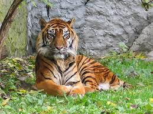
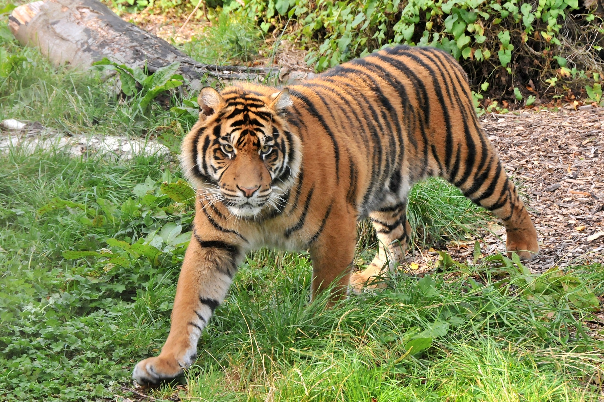

El tigre de Sumatra (Panthera tigris sumatrae) es la subespecie de tigre más pequeña y la única que queda en las islas de la Sonda, habitando exclusivamente en la isla de Sumatra, Indonesia. Se caracteriza por sus rayas más estrechas y juntas que las de otros tigres, lo que le permite camuflarse perfectamente en la densa selva tropical. Está clasificado como en **peligro crítico de extinción**, con menos de 400 individuos estimados en vida silvestre. Sus principales amenazas son la rápida deforestación para plantaciones de palma aceitera y la caza furtiva para el comercio ilegal de partes de su cuerpo.

